地址轉換座標
在處理空間資訊時，有時候資料中並無經緯度座標，僅有地址。如何將地址轉換成經緯度成為一個前置步驟，以下說明如何由Goodle Earth pro來協助處理地址轉座標的工作。
首先到網際網路網路爬蟲技術將台北市小七便利商店的地址抓下來，儲存成逗點分隔檔(711店址.csv)，共計802筆資料。
開啟Google Earth pro，在檔案功能下匯入台北市小七便利商店地址檔(711店址.csv)。
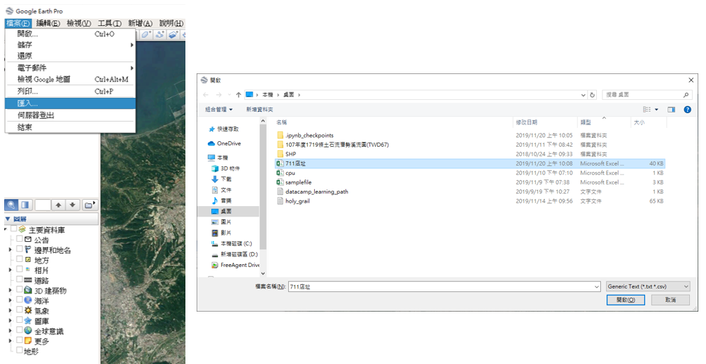
- 指定分隔符號，設定欄位類行為Delimited，Delimited為逗號，文字編碼為Big5。
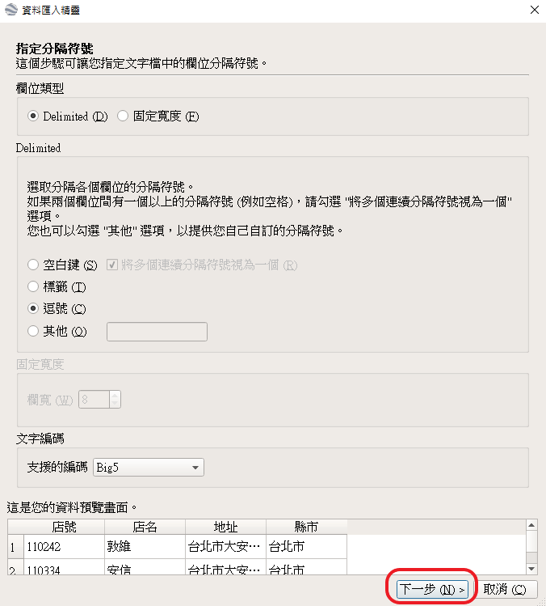
- 選取緯度/經度欄位，指定這個資料集不包含經緯度資訊，但是包含街道地址。
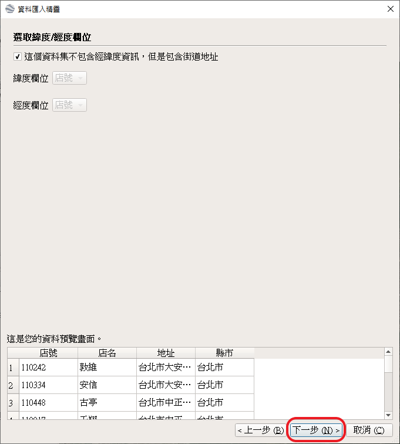
- 選取地址欄位，選取這個資料集包含一個地址欄位，地址欄位選取「地址」。
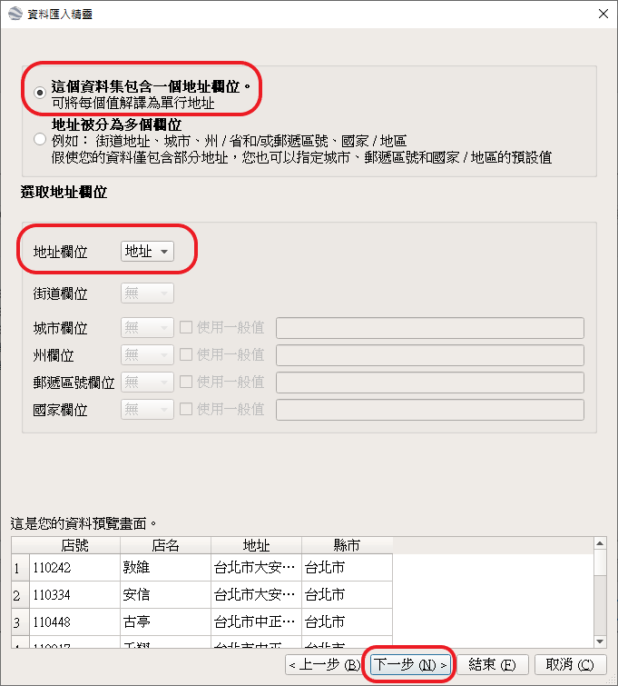
- 指定欄位類型，針對資料表中各個欄位選取適當資料類型，如地址欄位的類型為字串。
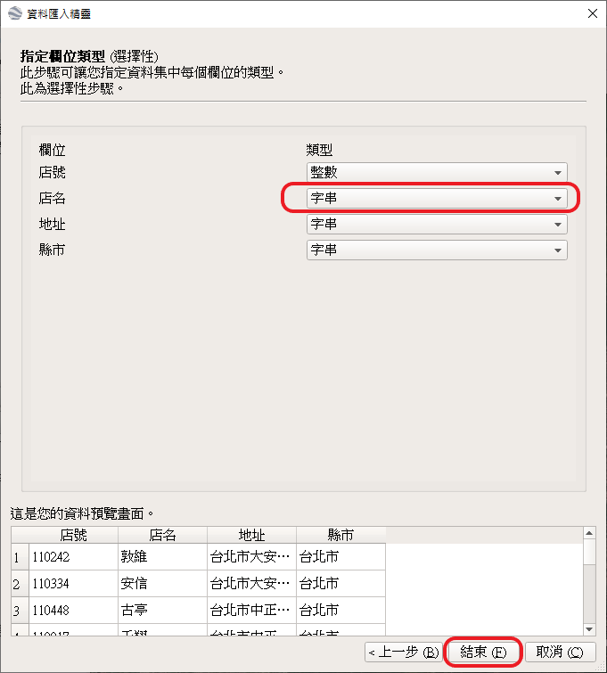
- Google Earth開始執行大量地址定位。
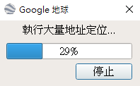
- 大量地址定位執行完畢後，Google Earth將一些無法定位的地址列表，並詢問修復方式，包含輸入新址或根據Google Earth參考位置來設定位置。如果有一些無法修復的位址資料，數量不大可以利用Google Earth線上修正的方式，不在此文中贅述。
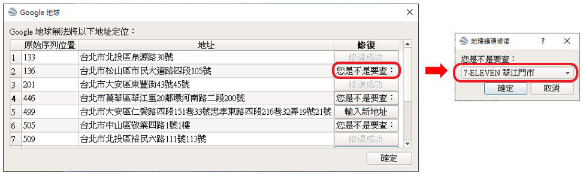
- 修復不確定的地址後，根據功能執行精靈，執行樣式範本套用及建立新範本。
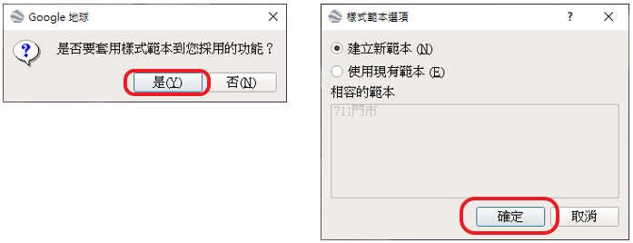
- 設定名稱欄位，本例中設定為「店號」。
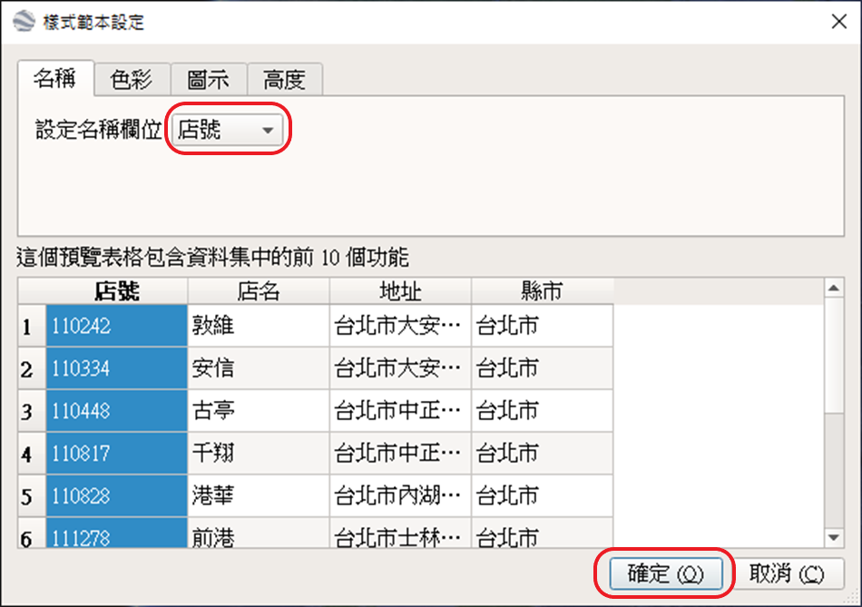
- 儲存範本(711店址.kst)
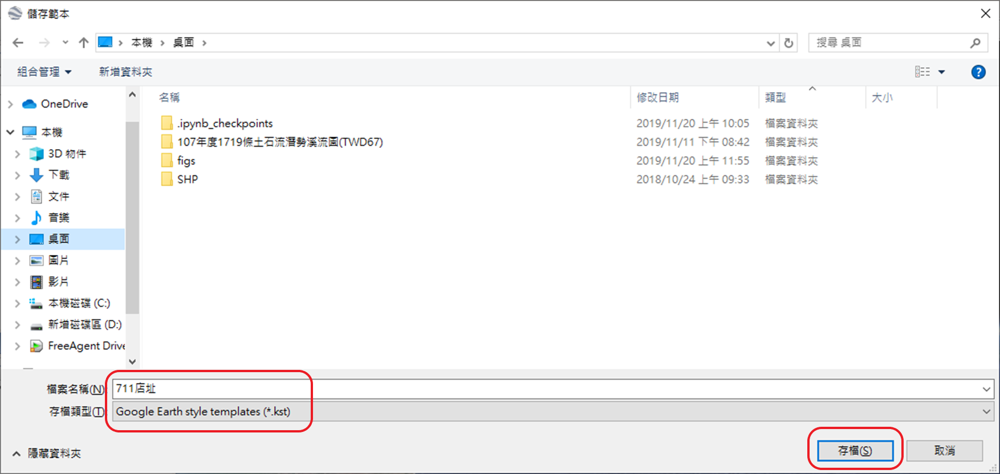
- 將7-11店址點位儲存為「711店址.kml」檔案。
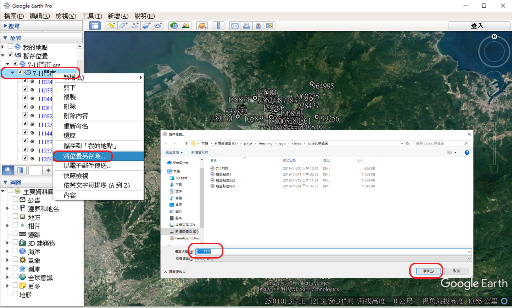
以上步驟完成後可以獲得711店址.kml檔案，此檔可以在GIS的軟體中以向量圖層方式開啟。